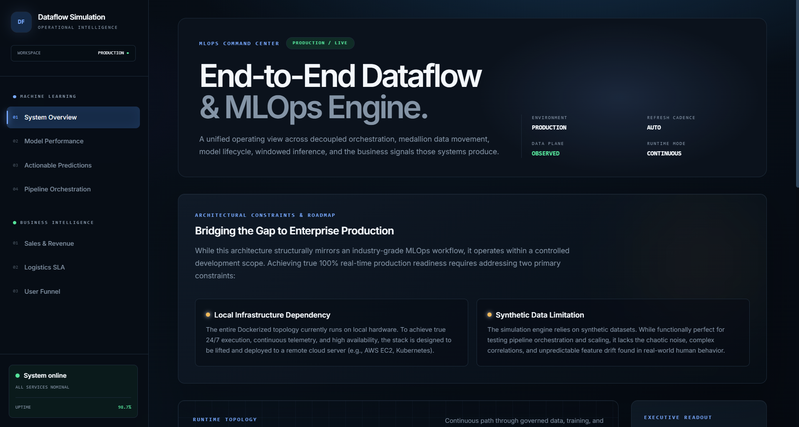
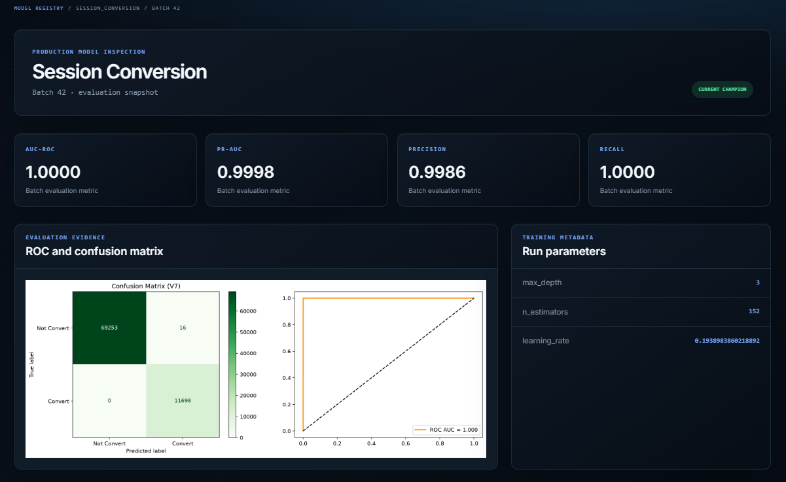
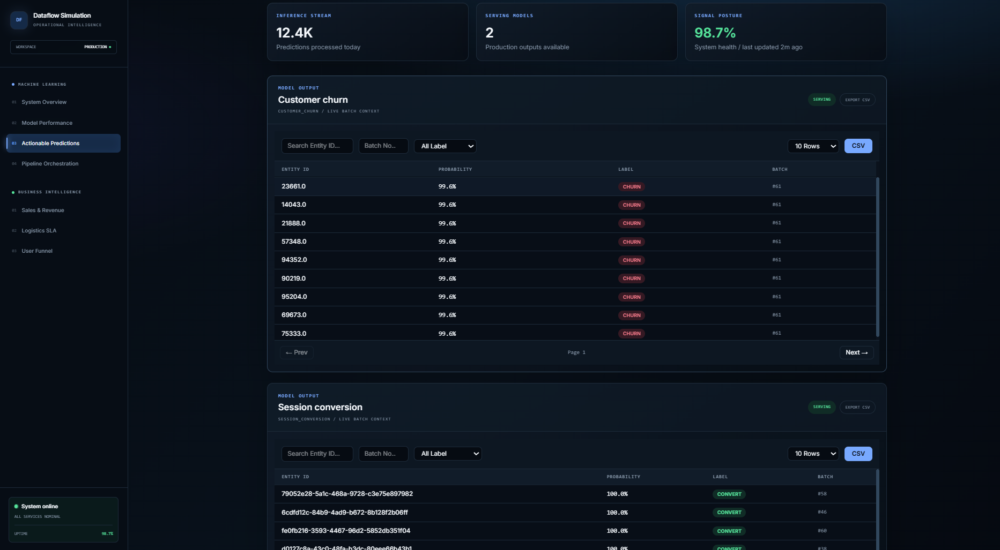
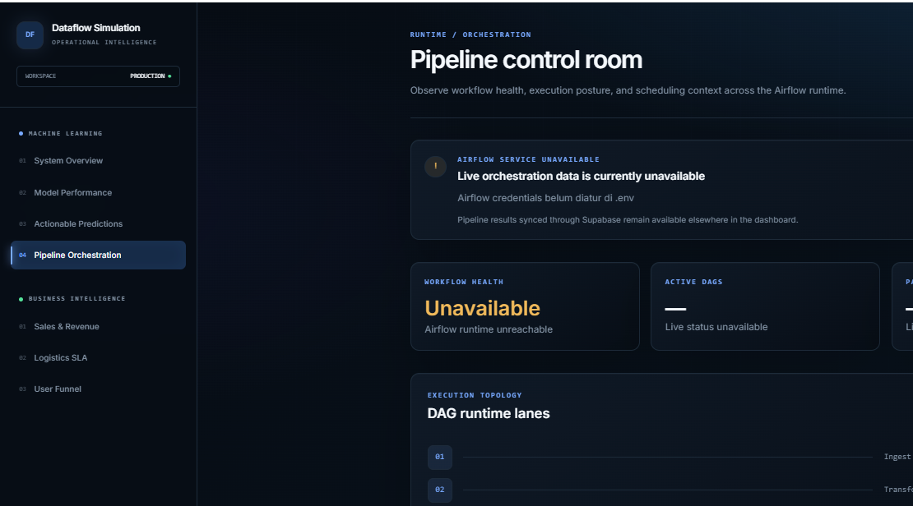

Verified engineering outcomes
Every number below is traceable to the repository. Model metrics come from the Supabase model_metrics table.
orchestrating load, transform, train, infer
churn and conversion
raw → gold
overview, models, predictions, pipelines, 3 analytics
per training run
batches between retraining
Champion / challenger
Automated promotion behind a majority-class baseline gate.
From raw data to business-ready data
An incremental pipeline replays historical e-commerce data month by month, turning raw records into cleaned, business-ready marts through a medallion architecture.
Machine learning results
Two binary classification pipelines with tuned, threshold-optimized XGBoost models.
Predict customers likely to churn
XGBoost · Optuna · dynamic class weighting · macro-F1 threshold
Predict whether a session converts
XGBoost · Optuna · dynamic class weighting · macro-F1 threshold
Champion vs challenger
Every training run is evaluated against the current champion and a majority-class baseline before promotion.
Event-driven retraining
Inference runs on every batch; retraining fires only when batch % 6 == 0, then evaluates and registers the model.
Airflow orchestration
Automated orchestration across loading, transformation, training, inference, and evaluation.
Live dashboard

System Overview

Model Performance

Actionable Predictions

Pipeline Orchestration
Business analytics
Revenue & margin
Revenue, gross margin, discount %, and revenue status.
Delivery & SLA
Processing time, delivery time, and SLA breach flags.
Conversion funnel
Stages only, not measured values.